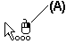

Select a feature
-
Choose Home tab→Select group→Select
 .
. -
Locate the feature you want to select by positioning the cursor over it.
-
Click to select the feature. To select overlapping or hidden features, you can use QuickPick.
To select a feature with QuickPick
QuickPick helps you to select features that overlap each other, or features that are hidden by other features.
-
Position the cursor over the feature you want to select and stop moving the cursor.
-
When the cursor changes to the QuickPick prompt, right-click.
The software displays the QuickPick list near the cursor, with an entry for each selectable feature.
-
Hover over the QuickPick list entries, without clicking, to highlight the corresponding features.
-
When the feature you want to select is highlighted, click the corresponding entry on the QuickPick list.
To clear a selection
-
Do one of the following:
-
Click in free space.
-
Right-click in free space.
-
Select another feature.
-
-
You can use the QuickPick Options dialog box to specify the QuickPick properties you want. For example, you can specify whether the left or right mouse button activates QuickPick.
-
The QuickPick prompt (A) indicates which mouse button you should click to activate QuickPick.

-
You can change the element highlight and selection colors with the Options command.
Learn more
Feature modelingConstructing features using the feature construction commands
Vent features